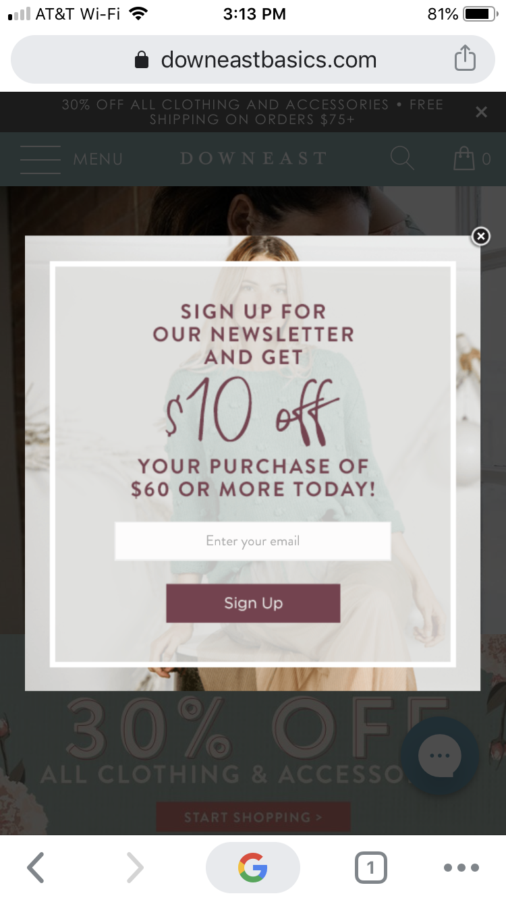

Lesson 02: Design Principles Document
Proximity Principle
Sierra Roots

Strength was added to this page by adding white space. Elements use color to call attention toward focal points. The first element the user sees is the image of Billy and his dog, Monster. He is homeless and well known about town. Homelessness and building community are the focus of this organization. This is easily navigated by order of importance. The Cold Weather Shelter brings together the community.
Visual Hierarchy Principle
Downeast Basics

The Visual Hierarch Principle pushes the user to their main focus. In the case of downeast basics that focus is getting emails to advertise their product. The subscribe pop-up shows before an opportunity to shop.
White Space & Clean Design Principle
Apple

On this site black is used as an emotional connection to Martin Luther King. It's clean and straight to the point. On a wider screen the picture of Martin King is viewed on the same page. I found it interesting to note the words show first on a smaller screen. The words are the message apple.com wants to push.